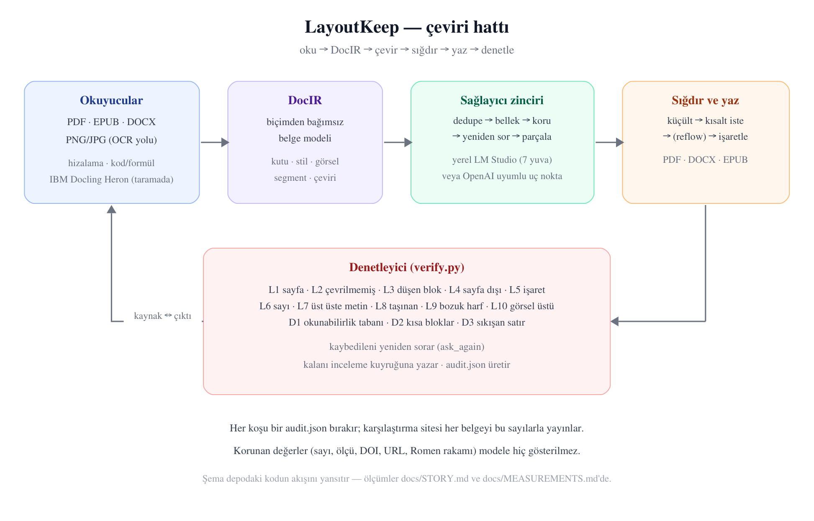
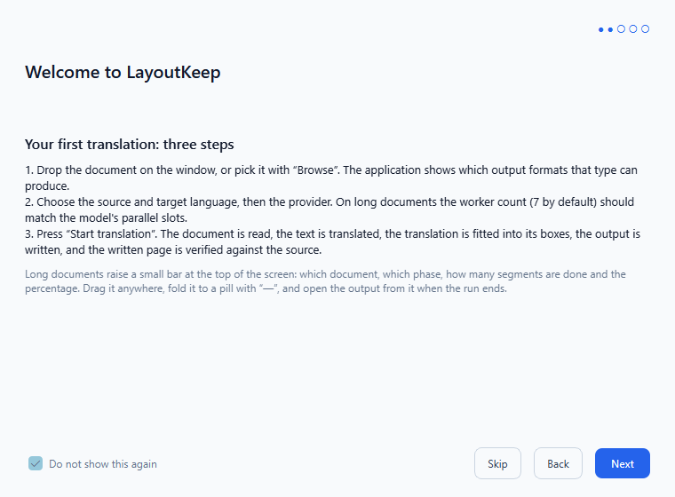
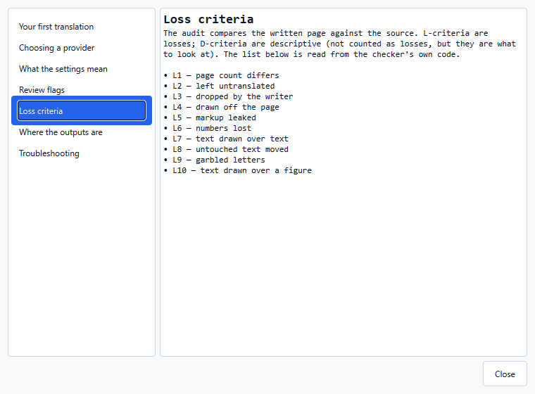
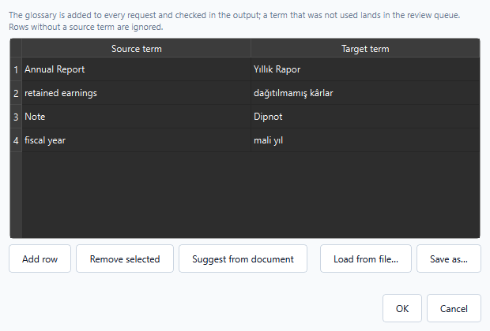
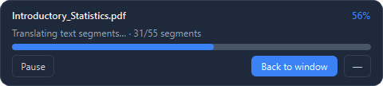
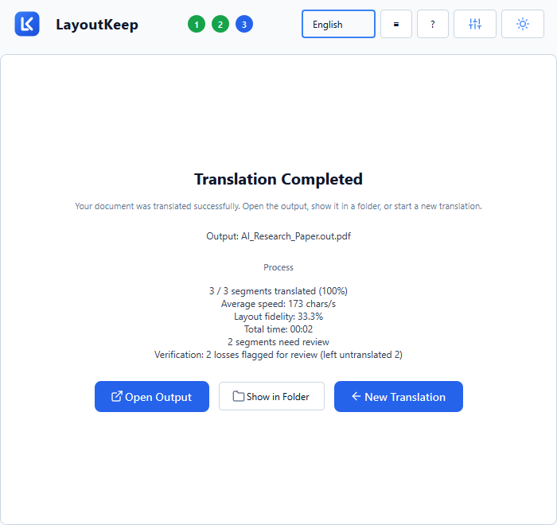
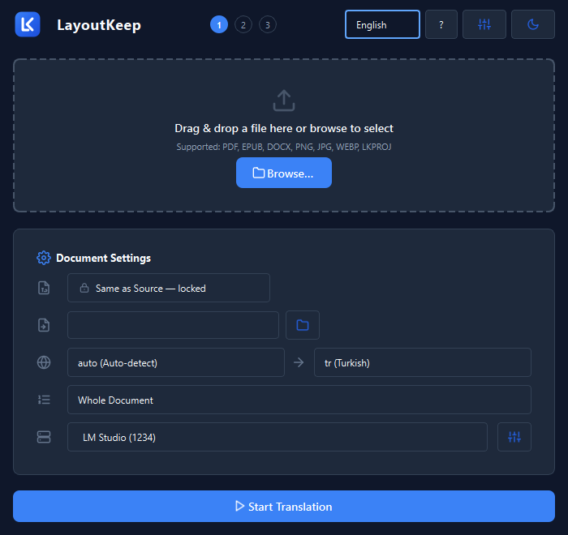
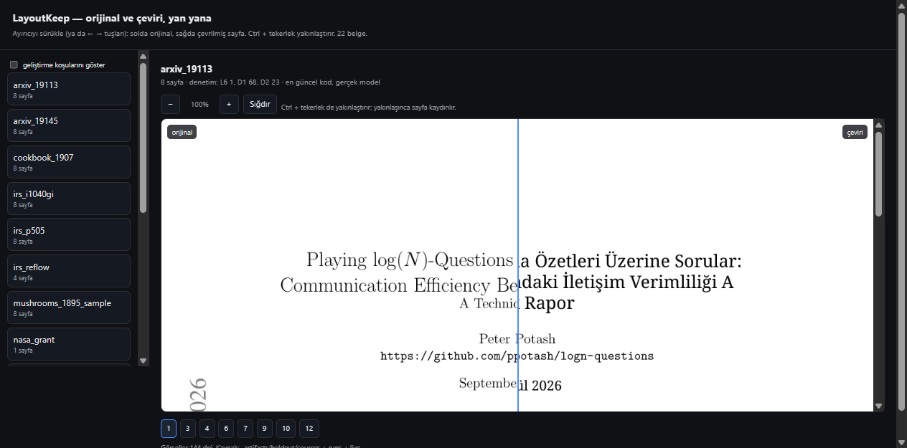

Sıfırdan bugüne LayoutKeep
Ölçülmüş bir mühendislik hikâyesi: ne denedik, ne kırıldı, neyi düzelttik, neyi geri aldık.
English abstract. LayoutKeep translates PDF, EPUB and DOCX documents without moving anything on the page: every text box keeps its position and its size, figures stay where they were, tables keep their rows. This document is the project's full record - how it started, what was tried and abandoned (including a full rewrite and a fine-tuning campaign), which bugs were found and how each root cause was measured, why the runtime model is a local one and why the layout detector is IBM Docling's Heron, and what is still known to be broken. Every number here comes from a command that is written down next to it.
0. Özet, sayılarla
| Ne | Değer | Nasıl ölçüldü |
|---|---|---|
| Desteklenen biçimler | PDF → PDF, EPUB, DOCX, PNG/JPG, LKPROJ | capabilities.py matrisi, iki yönlü testli |
| Kayıpsızlık kriteri | 10 kayıp (L1–L10) + 3 sığdırma (D1–D3) | verify.py; kriterler denetleyicinin kendisinden okunur |
| Yayınlanan ölçüm seti | 22 belge, 276 görsel, 0 "eski kayıt" | karşılaştırma sitesi (her belge kendi denetim sayılarıyla) |
| En büyük gerçek koşu | 220 sayfalık istatistik kitabı, 55 parça, 106 dakika | translate_book.py, --workers 7 |
| Test paketi | 1187 test | .venv/Scripts/python.exe -m pytest -q |
| Uygulama | tek dosya Windows exe (kurulumsuz), ~173 MB | PyInstaller onefile |
| Çalışma zamanı modeli | google/gemma-4-e4b, LM Studio, 7 yuva | yerel; belge makineden çıkmaz |
1. "Kayıpsız çeviri" tam olarak ne demek
Bir belgeyi çevirmek kolaydır; yerini koruyarak çevirmek zordur. Kaynak sayfada bir cümle kutunun içinde durur, çeviri genelde %10–30 daha uzundur, ve o kutu büyümez: komşu paragraf, şekil, tablo ve sayfa sonu oradadır. Naif bir çevirici ya kutuyu büyütür (sayfa akar, sayfa sayısı değişir, şekiller kayar) ya da metni kırpar (bilgi sessizce kaybolur).
Bu projenin sözü şudur:
- Her metin kutusu kendi konumunu ve boyutunu korur.
- Görseller, tablolar, başlıklar, dipnotlar yerinde kalır.
- Sığmayan ya da kaybolan her şey işaretlenir — sessizce kabul edilmez.
Üçüncü madde en önemlisidir: mükemmel olmayan bir sistem, neyi yapamadığını söyleyen bir sistemdir. Bunun için her koşudan sonra yazılan çıktı kaynakla karşılaştırılır ve 13 kriterle denetlenir.
2. Başlangıç: ilk günler
Proje 10 Eylül 2026'da tek bir cümleyle başladı: "translate a document without moving anything on the page". İlk günlerde alınan ve bugüne kadar taşınan kararlar:
- Aracı bir belge modeli (DocIR). Okuyucular (PDF, EPUB, DOCX, görüntü) belgeyi kendi
yapısından bağımsız bir modele çevirir; yazıcılar o modelden hedef biçimi üretir. Böylece "PDF → DOCX" gibi çapraz dönüşümler ayrı bir kod yolu gerektirmez.
- Kutunun sahibi kaynaktır. Çeviri, kaynağın ölçtüğü kutunun içine yazılır; modelin ürettiği
uzunluk asla düzeni belirlemez.
- Ölçüm, iddiadan önce gelir. Depodaki
docs/CONTRACT.mdbunu bağlayıcı kural yapar:
"bu belge ile bir ölçüm çelişirse, belgeyi düzelt ve ölçümün ne olduğunu yaz."
İlk günlerin en pahalı dersi, iddia ile ölçüm arasındaki farktı: ilk "kayıpsız" raporlar yalnız metin akışına bakıyordu. Görsel, grafik ve vektör tablo taşıyan gerçek belgelerle denendiğinde iki gerçek hata ortaya çıktı — o günden sonra zengin fixture kuralı geldi: yalnız metin taşıyan test dosyaları sessiz kayıpları gizler.
3. Mimari, kısaca
oku → DocIR → çevir (sağlayıcı zinciri) → sığdır (fit) → yaz → denetle (verify)- Okuyucular:
readers/pdf_reader.py,epub_reader.py,docx_reader.py,_layout.py
(hizalama çıkarımı), _nonprose.py (kod/formül tanıma), OCR yolu (taranmış sayfalar için).
- Sağlayıcı zinciri (
providers/):dedupe(aynı metni bir kez çevir) →cached/memory
(koşular arası bellek, SQLite) → protected (sayı, ölçü, DOI, URL, Romen rakamı modele hiç gösterilmez) → retry (aynısını geri veren modeli parça parça sıkar) → split (taşan bloğu cümle cümle sorar).
- Sığdırma (
fitting/): kutuya sığmayan çeviri için sırayla küçültme, kısaltma isteme ve
(isteğe bağlı) blokları aşağı itme (reflow) denenir; hiçbiri tutmazsa blok işaretlenir.
- Yazıcılar (
writers/): PDF (PyMuPDFinsert_htmlbox), DOCX, EPUB, TXT; kutu daraltma ve
"kendi kutusunu dene" gibi kararlar burada.
- Denetleyici (
verify.py): L1–L10 ve D1–D3; ayrıcaask_againile kaybedileni yeniden sorar.

Şema depodaki kodun akışını yansıtır: okuyucular → DocIR → sağlayıcı zinciri → sığdırma/yazma → denetleyici, ve denetleyicinin geri beslemesi (kaynak ↔ çıktı).
4. Kronoloji
| Dönem | Ne oldu |
|---|---|
| 10 Eyl | PDF → PDF hattı, DocIR, karşılaştırma sayfası, ilk paketleme |
| 11–13 Eyl | EPUB/DOCX yolları, zengin fixture'lar, görsel-üstü-metin ve tablo testleri |
| 14 Eyl | Sığdırma (fit) geçişi, kısaltma merdiveni, reflow fikrinin ilk ölçümleri |
| 15–16 Eyl | Masaüstü uygulaması (PySide6): kurulum, ilerleme, tamamlanma ekranları; sağlayıcı ayarları |
| 17 Eyl | Kampanya düzeltmeleri: NIST, The Time Machine, Electricity in Agriculture koşularından çıkan hatalar |
| 18 Eyl | Kayıpsızlık kampanyası: L kriterlerinin genişletilmesi, lossless_audit, held-out seti |
| 19 Eyl | 7 paralel işçi, parça parça kitap çevirisi, --resume, bellek ve sözlük sağlayıcıları |
| 19–20 Eyl (gece) | 220 sayfalık kitap (55 parça, 106 dk); L10'un ölçüm hatası; reflow'un iki ölçümü; uygulama içi sözlük; yardım ve karşılama ekranları; yüzen çubuk; sürümler 0.9.1 → 0.9.4 |
5. Hata kataloğu: belirti → kök neden → ölçüm → çözüm
Projenin en öğretici kısmı budur. Her satır gerçek bir koşudan geldi.
5.1 "Model bulunamadı" — ama model yerindeydi
Belirti: Uygulama, LM Studio'da model yüklüyken "model bulunamadı" diyordu. Kök neden: Gerçek hata mesajı Context size has been exceeded idi: 8192 token'lık bağlam, 7 istek ve uzun paragraflarla doluyordu; sağlayıcı bunu "model yok" diye raporluyordu. Çözüm: Bağlam 32768'e çıkarıldı, istek başına bütçe hesaplandı ve taşma artık ölümcül değil: taşan blok parçalanıp yeniden sorulur (providers/split.py).
5.2 Yüzen ilerleme çubuğu uygulamayı çökertiyordu (0xc0000374)
Belirti: Koşu sırasında pencere kapanınca heap bozulması. Kök neden: Sürükleme yardımcısı (WindowDrag) hedef widget'a zayıf referans tutuyordu; widget yok olunca sarkan işaretçiye yazıyordu. Çözüm: Güçlü referans + açık deleteLater(). Ölçüm: 20 dakikalık koşuda çökme yok.
5.3 Aynı metin onlarca kez çevriliyordu
Belirti: 55 parçalık kitapta başlık, dipnot ve künye satırları tekrar tekrar çevrildi. Kök neden: Parçalar birbirinden habersizdi; aynı kaynak metin her parçada yeniden gitti. Çözüm: providers/dedupe.py (aynı metni bir kez çevir) + providers/memory.py (koşular arası SQLite belleği). İkinci koşuda aynı belge neredeyse bedava.
5.4 Kırılan satırlar: kazancı ölçüldü, bedeli ölçülünce geri alındı
Belirti: Dizin sayfalarında 6.7pt'lik satırlar 4.5pt'ye eziliyordu (okunamaz). Kök neden: Blok kutuları birkaç punto üst üste bindiği için room_below negatif çıkıyor, yazar kutuyu kısaltıyordu. Denenen çözüm: Yazar, taban ölçek tutmazsa bloğun kendi kutusunu da denesin. Ölçüm: cookbook'ta okunamaz 12 → 2 ✓ ama IRS formunun tam koşulunda L7 (üst üste metin) 0 → 11 ✗. Aynı kayıtlı çeviriler üzerinde iki sürüm yan yana koşturuldu: korumasız L7=10, korumalı L7=0 — korumalı sürüm ise cookbook kazancını da sıfırlıyordu (12 → 12). Sonuç: Değişiklik tamamen geri alındı. Kural: bir düzeltmenin kazancını ölçmek yetmez, bedelini de ölç.
5.5 L10'un yarısı kendi ölçüm hatamızdı
Belirti: "Görselin üstünde metin" kriteri cookbook'ta 182, mushrooms'ta 124 kelime bildiriyordu. Kök neden (ölçüm hatası): O sayfalarda görsel döşemeli — tarama iki katman + satır yamaları; her kelime zaten taramanın üstünde. İkinci sınıf: arXiv grafiğinin kendi etiketleri kaynakta metin olarak duruyor (kaynakta 28, çeviride 26). Çözüm: Görseller tek tek değil birleşim alanıyla değerlendirilir; kaynağın o görsel üzerinde zaten yazdığı kelimeler çıkarılır. Gerçek kalan iki Wikipedia sayfası ise 13 → 0 düzeldi (yeniden çevirimle).
5.6 Karşılama ekranı test paketini asıyordu
Belirti: Test paketi %89'da 15 dakika bekledi. Kök neden: İlk-çalıştırma ekranı modal açılıyor; otomatik oturumda kimse kapatamıyor. Çözüm: LAYOUTKEEP_NO_WELCOME anahtarı; test oturumu kendi kurar.
5.7 Sözlük ve bellek yalnız komut satırındaydı
Belirti: Ayarlarda "çeviri belleği" vardı ama uygulama hiç kullanmıyordu (memory_path boş). Kök neden: Özellik CLI'da bağlıydı, arayüzde değil. Çözüm: İkisi de arayüze bağlandı; sözlük uygulama içi tablo düzenleyici + JSON/CSV/TSV okuma kazandı.
5.8 Yüzen çubuk: iki pencere aynı anda, ve kaybolunca geri gelmiyor
Belirti (kullanıcı ekran görüntüsü): Koşu başlayınca hem pencerenin kendi ilerleme ekranı hem çubuk görünüyordu; pencere küçültülünce çubuk da kayboluyordu; çubuk bir kez kapatılınca geri açılamıyordu. Kök neden (iki tane): (1) Çubuk ana pencereye çocuk olarak yaratılmıştı — Windows sahipli pencereyi sahibiyle birlikte küçültür. (2) İş başlarken koşulsuz gösteriliyordu ve geri getirecek bir denetim yoktu. Çözüm: Çubuk ebeveynsiz üst-düzey pencere (ömrü açık deleteLater() ile yönetilir); pencere ve çubuk sırayla görünür; başlığa ▤ "Küçük pencereye geç" düğmesi eklendi (çubuktaki "Pencereye dön" ile çift yönlü). 7 test bu davranışı tutuyor.
5.9 Uygulama tek istek gönderiyordu (7 yuva ayarlıyken)
Belirti (kullanıcı bildirimi): "paralel 7 slot ayarlı olsa da aynı anda sadece 1 slot yolluyor". Kök neden: Paralellik komut satırında vardı (ThreadPoolExecutor, parça başına bir alt süreç); uygulamanın çeviri döngüsü ise segment batch'lerini tek tek gönderiyordu. LM Studio'nun yuva ayarı tam da bunun için yapılmıştı — yani uygulama, aynı motorun yavaş kullanımıydı. Çözüm: Döngü dalga dalga çalışır: her dalgada translation.workers batch paralel gider, dalga sonunda duraklat/iptal kontrol edilir, sonuçlar belge sırasına göre birleştirilir. Her paralel iş parçası kendi sağlayıcı zincirini alır (dedupe önbelleği ve bellek bağlantısı paylaşılırsa yarış olurdu). Üç yeni test: eşzamanlılık gerçekten >1, tek işçide sıralı, çıktı belge sırasında.
5.12 Sayfa aralığı çıktıyı daraltmıyordu
Belirti (kullanıcı bildirimi): 841 sayfalık kitapta aralık seçildi; çıktı yine tüm kitap geldi — "ama sadece seçtiğim aralığı çıktı vermesi gerekmez mi, neden tüm kitabı vermiş". Ölçüm: Çıktı PDF'inde 841 sayfa, 194'ünde Türkçe (%23 — seçilen aralık), gerisi İngilizce. Motor aralığı yalnız çeviriye uyguluyordu; çıktı, kaynağın tamamının kopyasıydı. Kök neden: Bu bilinçli bir karardı ve yazılıydı: bir zamanlar aralık belgeden sayfa silerek uygulanmış, proje yalnız seçili sayfaları saklayınca inceleme kaybolmuş ve yeniden dışa aktarma sessizce kısalmıştı (CONTRACT.md, D5). Doğru çözüm aralığı ikiye ayırmaktı: yazılan kopyaya uygula, kaydedilen projede tüm sayfaları tut. İkinci kök neden (ölçümle çıktı): İlk denemede belge içinden sayfaları düşürmek yetmedi — çıktı yine 841 sayfa geldi, çünkü PDF yazıcısı sayfaları kaynak dosyadan çiziyor. Yazıcıya kaynağın dilimi verildi; dilimdeki sayfalar 0..n yeniden numaralandı ki doğrulama sayfa N'i N ile karşılaştırsın, proje ise özgün numaraları korusun (kopyalar deepcopy). Çözüm: _output_document + _source_slice; arayüzde aralık seçilince ne olacağı yazıyor (RANGE_HINT, tr/en/de). 11 yeni test + eski D5 testi yeni sözleşmeye çevrildi.
5.11 Ayar ekranındaki ölü anahtar
Belirti (kullanıcı isteği): "uygulamanın arayüzüne bağlanmamış ayarları bul ve uygulamaya bağla." Ölçüm: Bildirilen 30 ayarın anahtarları, src/ içinde okunan anahtarlarla karşılaştırıldı. Bir tanesi — timeout.first_batch_s — ayar ekranında görünüyor, kaydediliyor ve hiçbir şey okumuyordu: ilk partinin zaman aşımı sabitten geliyordu. Ayrıca ayar ekranının 30/30 gösterdiği de ölçüldü. Çözüm: Anahtar worker'a bağlandı (warm partiler kendi sabitini korur). Beş test: "bildirilen her ayar kodda geçmeli" (ölü anahtar bir daha sızmasın), ilk-parti ayarının zaman aşımına ulaştığı, warm partinin ondan etkilenmediği, varsayılan paralelliğin 2 olduğu, ayar ekranının her bildirileni gösterdiği. Ders: çalışmayan bir anahtar, hiç olmayan bir anahtardan kötüdür — çalışanlara olan güveni harcar.
5.10 Tarama gürültüsü sessiz değil
Belirti: NASA taramasında dekoratif başlık "Naga Merorautigs Frogrom Amerika" diye okundu. Çözüm: Blok "OCR güveni düşük (0.62)" ile işaretlenir — sessiz kayıp değil, kullanıcıya söylenen bir vaka.
6. Model seçimi: hangi model, neden
6.1 Çalışma zamanı LLM'i: yerel, tek, sabit
| Denenen | Sonuç |
|---|---|
| Bulut API'leri (Gemini ve benzerleri) | Kalite iyi, ama belge makineden çıkıyor ve maliyet sayfa başına |
| Ücretsiz yönlendiriciler (OpenRouter/free) | Reddedildi: küçük bağlamlı modele düşüp tekrar döngüsüne giriyor ("repetition loop"), uzun belgelerde kullanılamaz |
| Yedek zinciri (büyük bulut modeller) | Yalnız yedek olarak duruyor |
Yerel LM Studio + google/gemma-4-e4b | Seçildi: belge makineden çıkmaz, yuva başına bağlam denetlenebilir, 7 paralel işçi CPU/GPU'yu doyurur |
Gerekçe ölçülebilir: bu proje yerel bir modelle uçtan uca çalışır ve kalite farkı modelin becerisidir, düzenin garantisi değil — düzen garantileri modelden bağımsızdır.
6.2 Düzen modeli: neden IBM Docling (Heron)
Metin çıkarma, kural yazmakla değil görsel nesne algılama ile daha doğru yapılır. Başlangıçta docs/YENI_MIMARI_VE_GECIS_PLANI.md bunu şöyle koyuyordu: "IBM Docling, MinerU, Marker, RT-DocLayout metin çıkarmayı kural yazarak değil, görsel nesne algılama ve ilişki grafı ile çözer."
- Seçilen: IBM Docling'in Heron düzen modeli (RT-DETRv2, ONNX) — DocLayNet üzerinde
eğitilmiş; başlık, paragraf, tablo, formül, dipnot ve şekil altı yazılarını ayırır; CPU'da ~80–140 ms/sayfa. Lisans Apache-2.0, ilk kullanımda indirilir, paketlenmez.
- Neden V2 değil: O plan tam bir yeniden yazım öneriyordu (
LayoutKeep_V2). V2 denendi ve
terk edildi; ama planın işe yarayan parçası — düzen algılayıcı — mevcut motora alındı (--layout-detector, ocr/layout_detector.py). Yani karar "her şeyi değiştir" değil, "kanıtlananı al" oldu.
- Ne zaman çalışır: Yalnız taranmış/karmaşık sayfalarda; dijital belgelerde PyMuPDF'in kendi
metin katmanı yeterli ve daha hızlıdır.
6.3 İnce ayar (fine-tune) denemesi
Ayrı bir hat olarak LayoutKeep_Qwen_QLoRA denendi: Qwen2.5-7B-Instruct, Kaggle'da QLoRA, 6.000 örnek. Amaç ikiydi: (1) uygulamanın tel protokolüne uyum (çok segmentli JSON, <0>..</0> işaretleri, korunan değer token'ları), (2) akademik düzeyde EN↔TR çeviri. Veri omurgası OPUS-100 gibi hazır külliyatlar yerine elle yazılmış alan çiftleri oldu (OPUS en-tr ölçülüp reddedildi: haber/günlük konuşma ağırlıklı). Bu hat bugün deneysel durumda; çalışma zamanı modeli yerel gemma'dır.
7. Ölçüm disiplini: yanlış ölçümleri kim ölçtü
Projenin en değerli çıktılarından biri araçlarının kendisidir:
| Araç | Ne yapar |
|---|---|
tools/audit/lossless_audit.py | Bir koşuyu 13 kriterle denetler, audit.json yazar |
tools/audit/rewrite_run.py | Kayıtlı bir koşuyu güncel yazıcıyla yeniden çizer — model gerekmez, A/B için |
tools/audit/type_drift.py | Yazılan sayfanın tip sapması: büyümüş/küçülmüş/hizası değişmiş/okunamaz bloklar (artık kaynak sayfayla karşılaştırır) |
tools/audit/text_over_image.py | Görsel-üstü metin; birleşim ve kaynak kurallarıyla |
tools/audit/comparison_site.py | Yayınlanan karşılaştırma sitesi (kaynak ↔ çeviri, denetim sayılarıyla) |
tools/audit/live_check.py | Kayıtlı ölçümlerin üstüne yazmadan yeni koşu |
Bu araçlar sayesinde üç büyük ölçüm hatası yakalandı ve düzeltildi: (1) "bariz daha büyük font" iddiası — ölçüm bloğun stilini yanlış eşleştiriyordu, düzeltilince 0 büyümüş çıktı; (2) L10'un iki yanlış-pozitif sınıfı (§5.5); (3) type_drift'in hiza bayrakları — kaynağın dikey sayı şeritlerini "hizasız" sayıyordu, kaynakla karşılaştırınca IRS'te 14 → 2 düştü.
8. Ürünleşme: uygulama
- Karşılama ekranı (5 sayfa, TR/EN/DE): ne yapar, ilk çeviri üç adım, çeviriyi kim yapar,
kaliteyi ne belirler, hazırsın. Dil ve tema orada seçilir; atlanabilir; güncellemede bir kez daha görünür (sürüm kaydedilir).
- Yardım ekranı (
?): yedi bölüm; kayıpsızlık kriterleri doğrudan denetleyiciden okunur,
yani bayatlayamaz.
- Sözlük: uygulama içi tablo düzenleyici, JSON veya iki sütunlu CSV/TSV; kullanılmayan
terim inceleme kuyruğuna düşer.
- Çeviri belleği: koşular arası SQLite; aynı paragraf ikinci kez çevrilmez.
- Yüzen çubuk: pencereyi arkaya atınca koşu küçük çubukta sürer; ▤ ile geçilir, "Pencereye
dön" ile dönülür.
- İnceleme kuyruğu: her koşu, neyin denetlendiğini ve neyin insan beklediğini söyler.
| Karşılama ekranı (ilk açılış) | Yardım ekranı (kriterler denetleyiciden) | Sözlük düzenleyici |
|---|---|---|
 |  |  |
| Yüzen çubuk (pencere arkada) | Tamamlanma ekranı | Koyu tema |
|---|---|---|
 |  |  |
9. Sonuçlar ve dürüst sınırlar
Bugünkü durum (ölçülmüş):
| Belge | Parça | Kalan gerçek kayıplar |
|---|---|---|
| Wikipedia ×2 (yeniden çevirim) | 19 / 33 | L2 satırları; L10 = 0 |
| cookbook_1907 | 35 | L6=2, D1 (küçük punto) |
| mushrooms_1895_sample | 41 | L2=1, L6=1 |
| NIST dergisi / NISTIR taraması | 8 / 6 | L1 kısmi koşu; L2–L10 = 0 |
| IRS formu (48 parça) | 48 | L7=11 (yoğun form; yukarıdaki yazıcı sürümüyle koştu) |
| 220 sayfalık kitap | 55 | L2=2, L6=4, L10=0, D1=801 (küçük punto sınıfı) |

Yayınlanan karşılaştırma sitesi: solda orijinal, sağda çeviri, üstte o belgenin denetim sayıları (arxiv_19113 örneğinde: 8 sayfa · denetim L6 1, D1 68, D2 23).
Bilinen sınırlar: tablo başlıklarındaki sayı şeritleri (bir satır boyunca ayrı x konumlarına dağılmış salt sayı dizileri) çeviride tek bir sola yaslı bloğa düşebilir — sayılar korunur, dizilişleri kaybolur; kaynakça satırları ve numaralı başlıklar bazen kaynak dilde kalır (L2, işaretli); yoğun formlarda okunabilirlik tabanının altına inen bloklar vardır (D1; reflow modu bu sınıfı kaldırır ama sabit düzenlerde metni üst üste bindirebilir, o yüzden varsayılan kapalıdır); taranmış sayfalar OCR kalitesine bağlıdır ve düşük güvenle işaretlenir; sağdan sola yazı sistemleri uygulanmamıştır; kalite modelin becerisidir.
10. Dış kaynaklar ve atıflar
| Kaynak | Rolü | Lisans |
|---|---|---|
| PyMuPDF | PDF okuma/yazma motoru | AGPL-3.0 |
| Qt / PySide6 | Masaüstü arayüzü | LGPL-3.0 |
| IBM Docling — Heron düzen modeli | Taranmış sayfalarda düzen algılama (RT-DETRv2, ONNX) — raporu arXiv:2509.11720 | Apache-2.0 |
| BabelDOC | Karşılaştırma: paralel PDF çevirisi; "kayıpsız" iddiasının ölçülmesi fikri | AGPL-3.0 |
| PDFMathTranslate | Karşılaştırma: formül koruma ve kısa çeviri isteme | AGPL-3.0 |
| MinerU | Karşılaştırma: okuma sırası ve kademeli sığdırma (reflow) fikri | AGPL-3.0 |
| google/gemma | Çalışma zamanı modeli (yerel, LM Studio) | Gemma Terms |
| IBM Plex | Yayınlanan karşılaştırma sayfasının yazı tipi | SIL OFL 1.1 |
| NIST, NASA, PLOS, Wikipedia, Project Gutenberg | Ölçüm belgeleri (yalnız kamu malı/açık lisanslılar yayınlanır) | çeşitli |
11. Dersler
- Kazancı ölçmek yetmez, bedelini de ölç. (§5.4)
- Bir kriterin ne saydığını, kullanmadan önce ölç. (§5.5)
- Bir regresyonu tek koşuya bakarak suçlama — aynı girdiyle iki sürümü yan yana koştur.
- Arayüz ile komut satırı ayrı düşebilir. Bugüne kadar üç kez oldu: sözlük/bellek, sığdırma
modu, paralellik. Her biri "özellik var ama kullanılmıyor" diye ortaya çıktı.
- Sessiz kayıp, gürültülü hatadan kötüdür. Her koşu, neyi yapamadığını yazar.
- Ölçüm hatası, kod hatasından sinsi. Araçlarını da denetle.
- Yeniden yazım yerine kanıtlananı al. V2 terk edildi, düzen algılayıcı kaldı.
Bu belge, depodaki docs/campaign/JOURNAL.md, docs/KAYIPSIZ_MOD_DURUM.md, docs/LOSSLESS-REPORT.md, docs/MEASUREMENTS.md, docs/ENGINE-ARCHITECTURE.md ve docs/CONTRACT.md dosyalarından ve 164 commit'lik geçmişten derlendi.